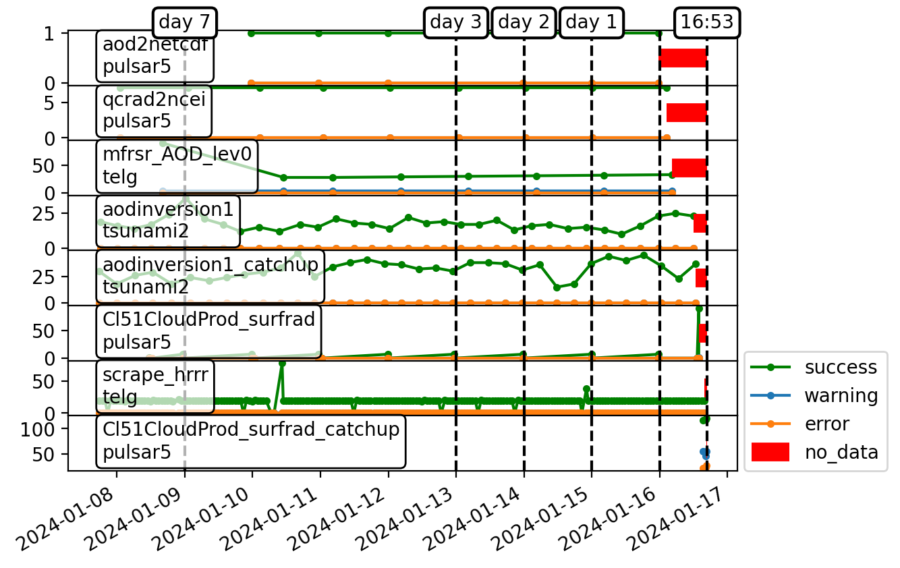

production status
[1]:
import productomator.production_status as prodst
import warnings
warnings.simplefilter(action='ignore', category=FutureWarning)
[2]:
stat = prodst.load_logs()
jpssscraper_surfrad_allProducts.ini.log has no valid entrys in the last 9 days!!
surfrad_allProducts.log has no valid entrys in the last 9 days!!
splash_all.log has no valid entrys in the last 9 days!!
[3]:
stat.plot()
/export/htelg/prog/productomator/productomator/production_status.py:109: UserWarning: Tight layout not applied. tight_layout cannot make axes height small enough to accommodate all axes decorations.
f.tight_layout()
[3]:
(<Figure size 1280x960 with 8 Axes>,
array([<Axes: >, <Axes: >, <Axes: >, <Axes: >, <Axes: >, <Axes: >,
<Axes: >, <Axes: >], dtype=object),
<matplotlib.legend.Legend at 0x7f10cb1a4190>)

move outdated to archive
[47]:
ood = out_of_date[3]
ood
[47]:
PosixPath('/home/grad/htelg/.processlogs/Cl51CloudProd_surfrad_catchup.log')
[48]:
if 0:
ood.rename(ood.parent.joinpath('archive').joinpath(ood.name))
[48]:
PosixPath('/home/grad/htelg/.processlogs/archive/Cl51CloudProd_surfrad_catchup.log')
move arbitrary to archives
[23]:
ood = pl.Path('/home/grad/htelg/.processlogs/Cl51CloudProd.log')
ood
[23]:
PosixPath('/home/grad/htelg/.processlogs/Cl51CloudProd.log')
[25]:
if 0:
ood.rename(ood.parent.joinpath('archive').joinpath(ood.name))